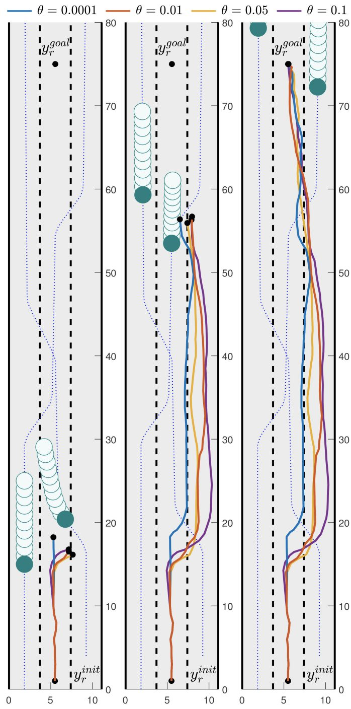
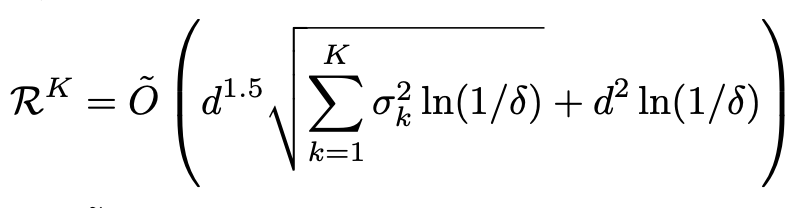

tro22
Distributionally robust risk map for learning-based motion planning and control: A semidefinite programming approach. Astghik Hakobyan, and Insoon Yang. IEEE Transactions on Robotics , 39(1):718-737, 2023.

[T-RO] Distributionally robust risk map for learning-based motion planning and control
The paper “ Distributionally robust risk map for learning-based motion planning and control: A semidefinite programming approach ” has been accepted for publication in the IEEE Transactions on Robotics . Distributionally robust risk map for learning-based ...
nips22
Improved regret analysis for variance-adaptive linear bandits and horizon-free linear mixture MDPs,. Yeoneung Kim, Insoon Yang, and Kwang-Sung Jun. Advances in Neural Information Processing Systems (NeurIPS), 2022.

[NeurIPS] Improved regret analysis for variance-adaptive linear bandits
The paper “ Improved regret analysis for variance-adaptive linear bandits and horizon-free linear mixture MDPs ,” co-authored by Yeoneung Kim and Kwang-Sung Jun, has been accepted to Advances in Neural Information Processing Systems (NeurIPS).

[RA-L & IROS] Infusing MPC into meta-RL
The paper “ Infusing model predictive control into meta-reinforcement learning for mobile robots in dynamic environments ” has been accepted to IEEE Robotics and Automation Letters (RA-L) and 2022 IEEE/RSJ International Conference on Intelligent Robots and ...